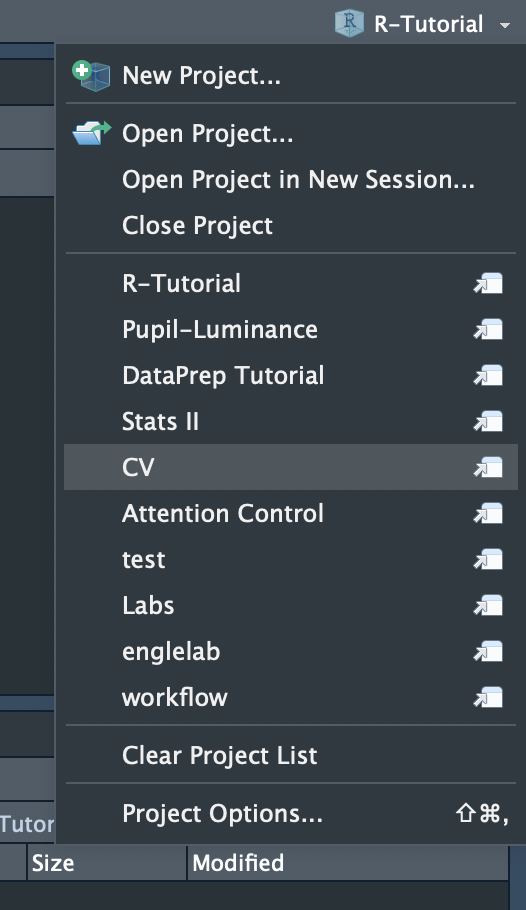

Chapter 4 Workflow
Parts of this section are taken almost directly from an excellent book on Data Science in R
One day you will need to quit R, go do something else and return to your analysis the next day. One day you will be working on multiple analyses simultaneously that all use R and you want to keep them separate. One day you will need to bring data from the outside world into R and send numerical results and figures from R back out into the world. To handle these real life situations, you need to make two decisions:
What about your analysis is “real”, i.e. what will you save as your lasting record of what happened?
Where does your analysis “live”?
4.1 What is real?
As a beginner R user, it is tempting to consider whatever is in our Environment (i.e. data we have imported) as “real”. However, we should consider our R Scripts and Data Files saved on our computer as real.
With your R scripts (and your data files), you can recreate the Environment It’s much harder to recreate your R scripts from your Environment! You’ll either have to retype a lot of code from memory (making mistakes all the way) or you’ll have to carefully mine your R history.
Therefore, the Environment is more of a temporary workspace. This workspace will get cleared out every time you Restart or Quit out of R and RStudio. If you treat your Environment as real this can have disasterous consequences and you can lose a lot of productivity.
Your R Scripts and Data Files are real
Even if you need to Quit R, come back to an analysis the next day, or want to run your analysis on a different computer than you started -
You should be able to Reproduce your analyses from your saved R scripts and original data files.
4.2 Where does your analysis live?
“One day you will be working on multiple analyses simultaneously that all use R and you want to keep them separate”
There are two levels at which your analysis will live
Project level
Individual R Script level
4.2.1 Project Level
The Project Level refers to where you are storing all your files associated with the project (i.e. R scripts, data files, figures, results) as well as to the organization of your folders and files.
If you are working on multiple projects at one time, then it is vital to:
Keep your analysis from different projects separated
You do not want objects created in your Environment from one project to get mixed up with objects (perhaps with the same object names) in a different project. We have not talked about the concept of Working Diectories yet, but you also need to ensure your working directory is correctly set in order to import and output files. If you are working on multiple projects at one time and not keeping them separated you will have issues Reproducing your analysis because the working directory might not be set correctly.
The three most important elements to an environment are:
The working directory
Loaded packages
Objects
The best way to keep project Environments separated is to work on them in separate R Sessions.
You can have multiple Sessions of R open at one time. And the three elements of an Environment in one R Session will be different and independent from those in another R Session. RStudio has an excellent way of managing separate projects with a feature called RStudio Projects.
Use RStudio Projects to create separate Environments for your projects
Visit this page for more details on R Projects.
Go ahead and create an R Project for this tutorial. Navigate to File -> New Project… ->
Choose Existing Directory if you already created an “R Tutorial”" folder on your computer or New Directory -> New Project if you have not. Create the R Project in the root folder of your R Tutorial. You should now see a file called R Tutorial.Rproj.
There are a couple of ways you can open an RStudio Project.
One way is to just simply open the
.Rprojfile. This will open a new R Session (and RStudio window).If you already have an RStudio window open you can navigate to the very top-right of the application window and browse different projects you have recently worked on. This is where you can also see which Project you currently have open.

4.2.2 Script Level
Within a Project, you will multiple R Scripts that are performing a different analysis. It is also important to keep the Environment of an R Script independent of the Environment from other R Scripts.
Obviously your R Scripts will be dependent on one another in the sense that one R Script might be creating data files that other R Scripts will later use.
For example, you might have an R Script (or multiple scripts) that prepare the data for statistical analysis by creating a scored merged data file. Then another R Script will actually run and output the statistical analyses. The statistical analysis R Script is dependent on a data file created by the first R Script. However, the Environment of the R Scripts are independent from one another. This is what was meant before when I stated that the Environment is not real, but the R Scripts and Data files are real.
R Scripts are linked in a data processing workflow through the data files they create not by the objects in the Environment
Therefore, it is important that the Environment of each R Script within a Project are independent from one another. This means that an R Script should not depend on objects created or data imported in other R Scripts. Or that any packages required for an R Script should be loaded in THAT script and not depend on them being loaded in other R Scripts.
As long as the data files required for an R Script are already created, you should be able to open a completely new and fresh session of R and succesfully execute all the lines of code in that one Script (without having ran any other scripts).
4.3 R vs. SPSS
R is so much more than just an alternative to SPSS
I hope you can begin to see from this Chapter that R is so much more than just an alternative to SPSS or EQS. R is a powerful programming language that greatly enhances your data handling and analysis skills.
R gives your the power of Reproducibility
Reproducibility is not just about allowing others to reproduce your analyses. More importantly it allows you to reproduce your own analyses. Or perhaps go back and modify some step in your analysis and re-run your modified analysis. Reproducibilty enhances the understanding of your data and gives you mastery over it.
Therefore, learning R is about learning how to manage and handle your data processing workflow in a way that empowers your ability to analyze and explore your data. This is not possible using SPSS and/or Excel. As scientists we work with data all the time. If this is your career track then why would you not want to learn the tools that give you mastery over your data?
If you treat R as just an alternative to SPSS, then it is all too easy to create poorly written scripts and disorganized projects that completely undermine reproducibility. Honestly, I am not sure if it is worth taking the time and effort to learn R as simply an alternative to SPSS.
In R, the objects you create and the functions you use in your scripts are all happening within a specific environment. If certain elements of that environment change then suddenly your R script might not work anymore. Therefore, it is important to be aware of what your current environment is to make sure your script executes correctly every time you want to use it.
The three most important elements to an environment are:
The working directory
Loaded packages
Objects
For a given research project you will likely be working with multiple scripts. You need to think of each R Script as it’s separate environment. Which means for every R Script you need to make sure that the 1) working directory, 2) loaded packages and 3) objects are set such that, each R script can execute properly and independently.
4.4 The Working Directory
In every R script you will 1) import a data set from a file on your computer, 2) do stuff to that data file, and 3) export a data file or an analysis output file.
You could use what are refered to as absolute file paths to import and export files but this is not good practice. The reason is that the absolute file path is specific to a particular computer. No one computer is going to have the same absolute file path. An absolute file path starts from the root directory on your computer and may look something like:
Mac: ~/Users/jasontsukahara/Dropbox (GaTech)/My Work/Coding Projects/R/R-Tutorial
Windows: C:\Users\jasontsukahara\Dropbox (GaTech)\My Work\Coding Projects\R\R-Tutorial
You do not want to write scripts that can only work on a specific computer! One of the great advantages to programming for data processing is reproducibility. You and your future self (and other researchers) can reproduce your exact same data processing steps. If you use absolute file paths you are undermining the reproducibility of your scripts.
It is good practice to use relative file paths instead. Relative file paths start from a root directory, usually the projects root directory. So if you have all your files and folders related to a research study in a directory called Cool Study then a relative file path to the Raw data files might look something like:
Absolute path to raw data files in Cool Study:
~/Users/jasontsukahara/Dropbox (GaTech)/My Work/Research Projects/Cool Study/Data Files/Raw Data
Relative file path:
Data Files/Raw Data
You can see that with relative file paths, only the internal organization of the project directory matters. This allows your script to be ran on different computeres, systems, and environments!
You working directory can be specified in various ways. By default, if you open up RStudio directly it will set the working directory to some default location such as your User root directory. This is not good.
If you open up RStudio by directly opening an R script file then it will set the working directory to the location of that file. This is better but still not ideal.
4.4.1 R Projects
Visit this page for more details on R Projects.
Essentially there are several ways to set a working directory but the best way is through the use of R Projects.
Above, I mentioned that one of the most important elements to your script’s environment is the working directory. R Projects ensure that your working directory is set correctly and is always the same every time you use that script. Basically an R Project allows you to open a fresh session of R that automatically sets the working directory to the directory where the R Project is saved. R Projects have the file extension .Rproj.
Go ahead and create an R Project for this tutorial. Navigate to File -> New Project… ->
Choose Existing Directory if you already created an “R Tutorial”" folder on your computer or New Directory -> New Project if you have not. Create the R Project in the root folder of your R Tutorial.
Now exit out of R Studio. Then open R Studio by opening the R Project file. You can evaluate what the working directory is by typing getwd() in the console.
In your R Scripts you can now simply use relative paths from the working directory. And it doesn’t matter what folder, within “R Tutorial”“, you save your R scripts to.
As an exercise, save an R script to a folder within your “R Tutorial”" directory. R scripts have the extension, .R. Navigate to File -> New File -> R Script. Save the script file to R Scripts/test.R. Close out of RStudio and directly open the test.R file. Now evaluate the working directory by typing getwd() in the console.
Oops… you see the working directory is no longer where the .Rproj file is saved. As long as you open RStudio from the .Rproj file and not one of the script .R files then your working directory will automatically be set correctly. While this is much better it is still not ideal. This is where the here package comes in handy.
4.4.2 here::here()
This method is simple to use and is a great way to specify relative paths. It will allow you to open RStudio using any of your .R script files and maintain the some relative file path from your .Rproj file across every R Script.
First go ahead and install the here package, install.packages("here").
For a passionate ode to the here package see: https://github.com/jennybc/here_here
Basically, when here is loaded, library(here), it will search for one of two files to locate the start of the relative file path. 1) a hidden .here file or 2) an .Rproj file. It will recursively keep going backwards in directories to locate a root directory that contains one of these files.
The .here file can be created by set_here(), but is unnecessary if you are using the R Project method.
What this allows is pretty cool. Let’s say your working directory is “R Tutorial”, which is the directory where your .Rproj file is saved. Even if you have an .R script saved in "R Tutorial/R scripts/test.R", you can open a new fresh session of R by opening that script file (instead of the .Rproj file). If you load library(here) at the top of the test.R file then it will automatically set a relative file path from "R Tutorial" since it will detect an .Rproj file in that directory. Then tomorrow maybe you want to work on a different .R script located somewhere else but still within this same project direcotry. Let’s say it is located at "R Tutorial/Data/something dumb/scripts/thisisascript.R". Again, you can open a new fresh session of R by opening this file AND still have the same relative file path no matter what script you open, or if you open the .Rproj file.
Note that this method is actually a little different from setting a working directory. Therefore, you need to use the here() function from the here package when using relative file paths. To reference a relative file path you can use here(). For instance
library(here)
here("Data", "somethingdumb", "scripts", "thisisascript.R")
# Or
here("Data/somethingdumb/scripts", "thisisascript.R")Both of these refer to the same relative file path
"Data/somethingdumb/scripts/thisisascript.R"The general format for using here() for importing or outputing a file might look something like
library(here)
read_csv(here("Data/Raw Data", "import_filename.csv"))
write_csv(here("Data/Scored Data" "output_filename.csv"))When using here() the start of the relative file path will ALWAYS be where the .Rproj file is located. Now in ALL of your scripts you can just use the here() function whenever you need to specificy a relative file path.
4.4.3 RStudio Sessions
Also related to working directories is the concept of RStudio Sessions. RStudio is an environment window for interacting with R. When you are using RStudio, you are not directly interacting with the actual installed R software on your computer. You are interacting with the R software on your computer through RStudio.
It is possible to have multiple RStudio sessions open at a given time. And each RStudio session can be interacting with a different instance of R. Each instance of R can have different working directories and different packages loaded.
IF YOU ALREADY HAVE AN RSTUDIO SESSION OPEN FROM A DIFFERENT PROJECT OR ROOT DIRECTORY, JUST OPENING AN .R SCRIPT FILE RELATED TO A NEW OR DIFFERENT PROJECT IS NOT CREATING THE RIGHT ENVIRONMENT FOR THAT SCRIPT TO WORK.
THEREFORE EACH TIME YOU OPEN FILES RELATED TO A NEW OR DIFFERENT PROJECT YOU SHOULD EITHER:
- CLOSE OUT OF R STUDIO AND REOPEN IT BY OPENING A FILE IN THE THE NEW OR DIFFERENT PROJECT
or
- OPEN A DIFFERENT RSTUDIO SESSION BY DIRECTLY OPENING THE
.RPROJFILE
This is one of the advantages to using RProjects. If you are prone to not closing out of windows or tabs, RProjects allow you to easily manage the environment of multiple projects opened at one time.
Additionally, it is suggested to not open script files from your computer directory. Instead, open script files from the File Panel in the bottom right section of your RStudio Session. That way the script file opens in the correct RStudio Session associated with a particular project.
The idea of loaded packages and objects is much simpler than working directories. Basically you want each R Script’s environment to be independent of other R scripts. An R Script should not depend on the packages loaded or objects and functions created in another R Script.
So if I create an object called data in one R Script, another R Script should not rely on the object data from that previous R Script. Similarly, if I load a package called dplyr in one R Script, I should load the dplyr package again in any subsequent R Scripts that require that package.
You certainly will be writing sripts that depend on each other (As you move from one data processing stage to the next), but the environment of one R Script should not depend on the environment of another R Script. To test if the environment for one R Script depends on other R Scripts, you can close out of RStudio after executing each script file, re-opening RStudio and executing another script file. If a script does not work in a new fresh session of RStudio, then that script is likely depending on the environment of other R Scripts.
4.5 Loaded Packages
To make sure that the packages used in one R Script do not depend on the packages loaded in other R Scripts:
Load all required packages for that one R Script at the top of the script
This allows you to easily evaluate which packages are required for that script.
4.6 Objects
To make sure that the objects and functions created in one R Script do not depend on the objects and functions created in other R Scripts:
Include the following line of code at the bottome of the script
rm(list=ls())
This will remove any objects and functions in the current environment. That way when the next R Script is ran, there will be no leftover objects or functions from previous R Scripts.